Эспадрильи – это вид обуви, который отличаются плетеной подошвой и натуральным (чаще текстильным ) материалом верха.
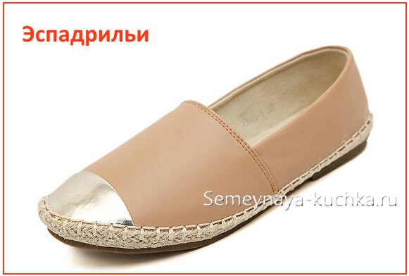
Эспадрильи
Слипоны — это обувь на мягкой спортивной подошве выполенная из текстиля. Характерным признаком слипонов служит слегка выступающий язычок и резиночка рядом с язычком.
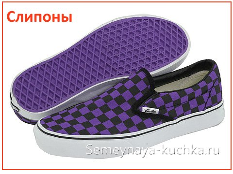
Слипоны
Слиперы – похожи на слипоны только формой язычка – но отличаются от них во первых отсутствием резинки-перепонки, и твердой подошвой
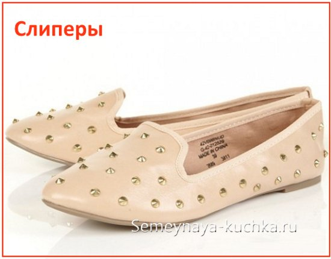
Слиперы
Лоферы – берут свое начало в Норвегии прошлого века (их носили в качестве домашней обуви и имели мягкую подошву. Новое звучание лофером принес модный дом Гуччи – они подарили лоферам твердую подошву и золотую перемычку на носке.
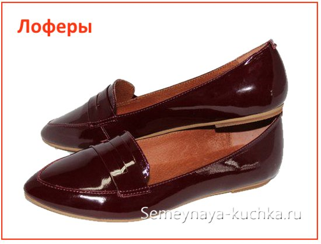
Лоферы
Moccasin – мокасины название обуви, который нам подарили индейцы. Мокасины имеют U-образный прошитый носик с выпуклым рельефным швом. Это настоящий мокасиновый крой.
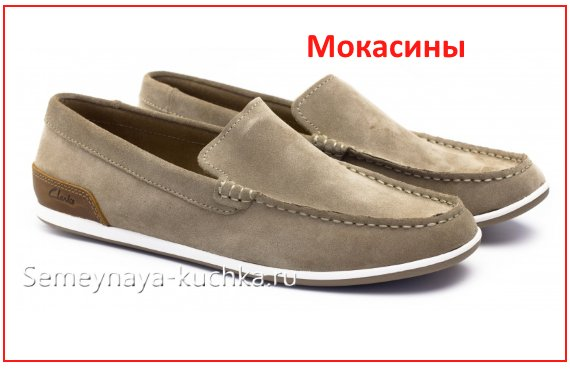
Moccasin
Dockside – топсайдеры по своему крою напоминают мокасины. Отличительный признак этого вида обуви заключается в его матросском калорите – декоративный шнурок идет по верхнему краю ботинка . Отличаются они продетым по верху обуви шнуром, который выполняет функцию декора(как шнурок в воротнике английского моряка).
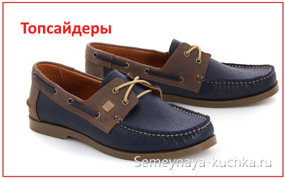
Dockside
Монки – вид обуви который отличает наличие ремешка с пряжкой – иногда одного, чаще двух сразу. Высота монков не выше щиколотки (этим они отличаются от такого вида обуви как КАЗАКИ)
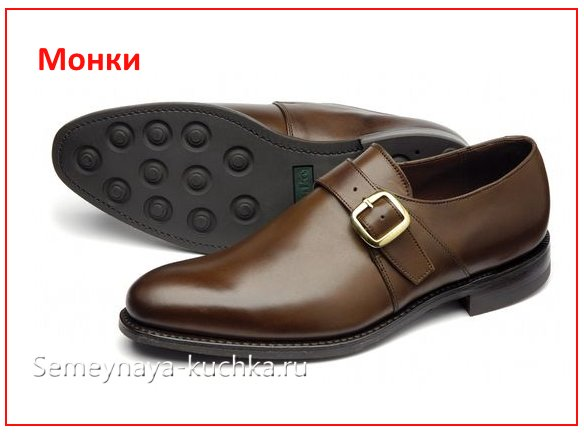
Монки
Оксфорды отличаются от всех других похожих на них видов ботинок тем, что БОРТИКИ ИЗ ШНУРОВКИ вшиты своими нижними краями в мысовую часть ботинка. То есть, по сути, шнуровка у этого вида обуви выполняет декоративную функцию, она не особо расширяет мысок при расшнуровывании.
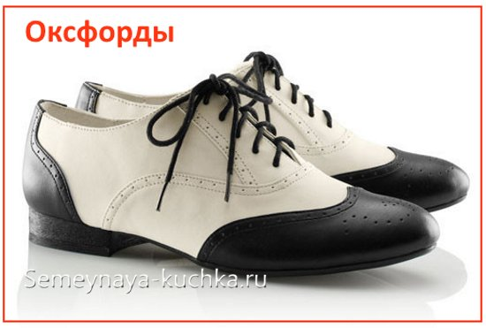
Оксфорды
В ботинках ДЕРБИ боковины нашиты поверх основной части ботика. И поэтому при развязаных шнурках эти боковины могу свободно отгибаться (шлепать как уши). А если вы помните в оксфордах напротив боковины шнуровочной части намертво вшиты в мыс ботинка и не могут отгибаться и даже с трудом раздвигаются.
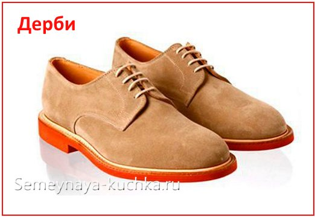
ДЕРБИ
Броги – разновидность обуви идеально подходящая для брюк из хлопковой или льняной ткани, для брюк-чинос, для вельветовых штанов и спортивных элластичных штанишек.
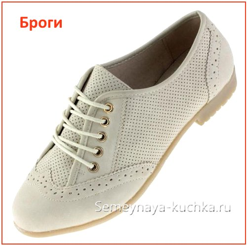
БРОГИ
Отличительной особенностью ДЕЗЕРТОВ являются их утолщенная подошва и мягкая чаще замшевая кожа и очень маленькое количество дырочек для шнуровки.
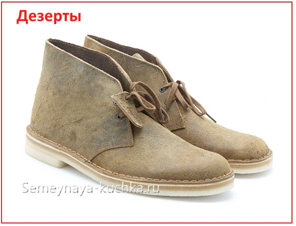
ДЕЗЕРТЫ
Ботинки ЧУККА (или чакка) отличаются от дезертов более свободным диапозоном кроя – дупускается из более высокие борта… и допускается уже больше дырочек для шнуровки – не две а уж три. И материал для этого вида обуви уже не обязан быть замшевым – гладкая даже лаковая кожа только приветствуется.Ботинки ЧУККА (или чакка) отличаются от дезертов более свободным диапозоном кроя – дупускается из более высокие борта… и допускается уже больше дырочек для шнуровки – не две а уж три. И материал для этого вида обуви уже не обязан быть замшевым – гладкая даже лаковая кожа только приветствуется.Ботинки ЧУККА (или чакка) отличаются от дезертов более свободным диапозоном кроя – дупускается из более высокие борта… и допускается уже больше дырочек для шнуровки – не две а уж три. И материал для этого вида обуви уже не обязан быть замшевым – гладкая даже лаковая кожа только приветствуется.Ботинки ЧУККА (или чакка) отличаются от дезертов более свободным диапозоном кроя – дупускается из более высокие борта… и допускается уже больше дырочек для шнуровки – не две а уж три. И материал для этого вида обуви уже не обязан быть замшевым – гладкая даже лаковая кожа только приветствуется.Ботинки ЧУККА (или чакка) отличаются от дезертов более свободным диапозоном кроя – дупускается из более высокие борта… и допускается уже больше дырочек для шнуровки – не две а уж три. И материал для этого вида обуви уже не обязан быть замшевым – гладкая даже лаковая кожа только приветствуется.Ботинки ЧУККА (или чакка) отличаются от дезертов более свободным диапозоном кроя – дупускается из более высокие борта… и допускается уже больше дырочек для шнуровки – не две а уж три. И материал для этого вида обуви уже не обязан быть замшевым – гладкая даже лаковая кожа только приветствуется.